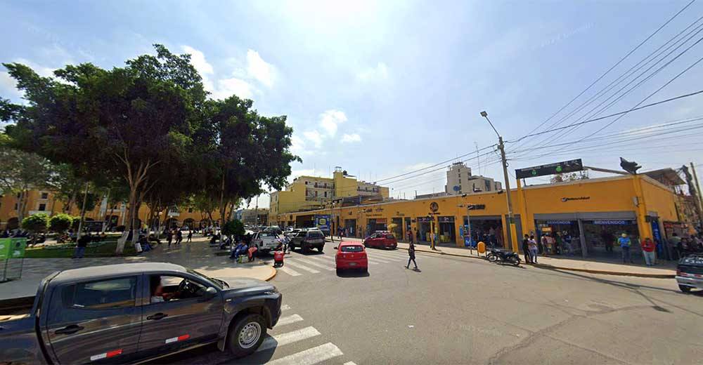

Penetración de los rayos UV
Es importante tener en cuenta que, aunque algunos rayos UV son absorbidos por la atmósfera y no llegan a la superficie de la Tierra (UVC), los rayos UVB y UVA sí penetran en la piel cuando estamos expuestos al sol.
La radiación ultravioleta (UVB y UVA) puede penetrar en la piel a través de la epidermis, que es la capa más superficial de la piel. La cantidad y profundidad en la que la radiación UV logra atravesar la piel, depende de varios factores entre los que se incluyen la longitud de onda de los rayos UV, la cantidad de melanina en la piel y las características de la exposición al sol.
Efectos de los rayos ultravioleta
Los rayos UV pueden tener tanto efectos positivos como negativos en la piel. A continuación, exploraremos las ventajas y desventajas de la exposición a los rayos UV:
Efectos positivos
La exposición controlada y adecuada a los rayos UV del sol puede tener los siguientes beneficios:
● Síntesis de vitamina D. La exposición muy controlada a los rayos UVA puede aumentar la vitamina D, esencial para la salud de los huesos y el sistema inmunológico.
● Mejora de algunas afecciones de la piel. En algunos casos, la exposición muy controlada a la radiación UV puede tener efectos positivos en ciertas afecciones de la piel, como la psoriasis y el acné; aunque su exposición siempre debe ser supervisada por un médico y con precauciones adecuadas.
Efectos negativos
Por otro lado, la exposición excesiva o prolongada a los rayos UV puede tener efectos malignos en la piel:
● Daño cutáneo. Los rayos UVA pueden penetrar profundamente en la piel y causar daño a las células cutáneas, lo que puede llevar a un envejecimiento prematuro de la piel, causando la aparición de arrugas, manchas y flacidez.
● Quemaduras solares. Los rayos UVB son los principales responsables de las quemaduras solares, que son una señal de daño en la piel causado por la exposición excesiva al sol.
● Aumento del riesgo de cáncer de piel. La exposición crónica a los rayos ultravioleta, especialmente a los rayos UVB, puede aumentar las probabilidades de sufrir cáncer de piel. Por ello, se recomienda el uso de protector solar para prevenir el desarrollo de cáncer de piel, incluyendo el melanoma.
Radiación UV en Ica, Perú
La ciudad de Ica se caracteriza por altos niveles de radiación UV durante todo el año, lo que aumenta la importancia de tomar medidas de protección solar.
Índice UV: Según el Servicio Nacional de Meteorología e Hidrología del Perú (SENAMHI), Ica presenta índices UV que pueden alcanzar niveles extremos, especialmente durante el mediodía solar y en condiciones de cielo despejado.
Monitoreo Diario: El SENAMHI proporciona información diaria sobre la vigilancia del Índice Ultravioleta (IUV) en la ciudad de Ica, lo que permite a los residentes estar informados y tomar precauciones adecuadas.

Recomendaciones para los Habitantes de Ica
Dada la alta radiación UV en Ica, es esencial adoptar medidas de protección:
Uso de Protector Solar: Aplica un protector solar de amplio espectro con un SPF mínimo de 30, incluso en días nublados.
Ropa Protectora: Viste ropa de manga larga, sombreros de ala ancha y gafas de sol con protección UV.
Evitar Horas Pico: Limita la exposición al sol entre las 10 a.m. y las 4 p.m., cuando la radiación UV es más intensa.
Consultar el Índice UV Diario: Revisa diariamente el índice UV proporcionado por el SENAMHI para planificar actividades al aire libre de manera segura.
 CONTÁCTANOS
CONTÁCTANOS